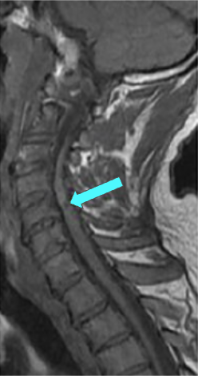

Adapted from: Nouri A, Martin AR, Mikulis D, Fehlings MG. Magnetic resonance imaging assessment of degenerative cervical myelopathy: a review of structural changes and measurement techniques. Neurosurg Focus. 2016 Jun;40(6):E5.
1) Description of Measurement
T1 hypointensity refers to focal or diffuse low signal intensity within the cervical spinal cord on T1-weighted MRI. When present, it is considered a marker of chronic spinal cord injury, most commonly representing myelomalacia, cord atrophy, gliosis, or irreversible ischemic damage.
In the context of cervical spinal stenosis or degenerative cervical myelopathy (DCM), T1 hypointensity is associated with longstanding compression, advanced disease, and poorer neurologic recovery compared with patients who demonstrate T2 hyperintensity alone.
2) Instructions to Measure
3) Normal vs. Pathologic Ranges
Key points:
4) Important References
Morishita Y, Naito M, Hymanson HJ, et al. The relationship between the cervical spinal canal diameter and the pathological changes in the cervical spine. Eur Spine J. 2009; Jun; 18(6):877-83.
Tetreault L, Palubiski LM, Kryshtalskyj M, et al. Significant Predictors of Outcome Following Surgery for the Treatment of Degenerative Cervical Myelopathy: A Systematic Review of the Literature. Neurosurg Clin N Am. 2018 Jan;29(1):115-127.e35.
Badhiwala JH, Wilson JR, Fehlings MG. Global burden of traumatic brain and spinal cord injury. Lancet Neurol. 2019 Jan;18(1):24-25.
Nouri A, Martin AR, Mikulis D, et al. Magnetic resonance imaging assessment of degenerative cervical myelopathy: a review of structural changes and measurement techniques. Neurosurg Focus. 2016 Jun;40(6):E5.
5) Other info....
T1 hypointensity should always be interpreted in conjunction with T2 hyperintensity:
Presence of T1 hypointensity is a negative prognostic factor for:
Absence of T1 hypointensity does not exclude clinically significant myelopathy
Particularly useful when combined with: